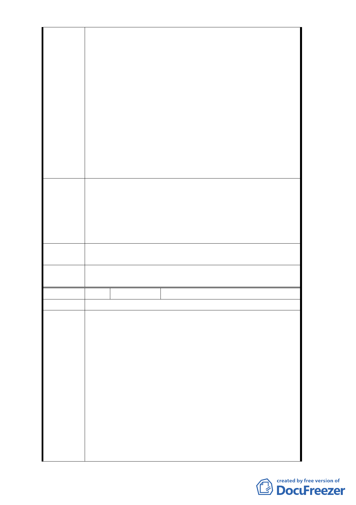

，卻未見相關單位依法辦理通盤檢討作業，試問，
主管機關是否有行政怠惰之嫌？對於潛在的損害群
眾利益的行為，以發展經濟為由將群眾的呼籲置之
度外，是屬行政不作為的一種表現，亦即是國家公
職人員在履行其職責過程中沒有盡職盡責，致使人
民的利益遭受重大損失的行為。行政程序法第 7 條
關於行政行為之原則即規定：政府執法如有多種同
樣能達成目的之方法時，應選擇對人民權益損失最
少者，且採取之方法所造成之損害不得與欲達成目
的之利益顯失均衡。吾等財產被不合時宜又遭行政
怠惰拖延通盤檢討的都市計劃綁架下，對未來的發
展已束手無策，懇請相關機關能遵照第 637 次都委
會之決議主動積極辦理變更本案細部計畫，刪除「
大街廓整體開發及由威京公司整體開發」之規定。
爰此，請求貴會正視吾等改善生活環境的基本權益，請貴
會速依 102 年 10 月 24 日都市計畫委員會第 650 次會議決
建議辦法
議及 102 年 9 月 12 日府都規字第 10235776100 號公告公
開展覽內容，同意辦理變更細部計畫解除整體開發與開發
主體之規定，俾便本範圍內地主能回復對自有財產之處分
權，讓土地獲得合理之更新與使用。
擬建議處
理意見
同編號4回覆內容。
委
決
員
會
議
同編號1。
編 號 10 陳情人 蕭○裕（高嘉瑜議員函轉）
陳情位置 松山區西松段三小段 182、183 地號
主旨：關於小市民蕭○裕（以下簡稱陳情人）所有臺北市
松山區西松段三小段 182、183 地號等兩筆土地受
市府都市計畫限定須交特定之開發公司以大街廓
整體開發方式來規劃，其中涉及本人財產處分權益
，至為不公，陳請高大議員協助陳情人敦促市府儘
速依都市計畫法相關規定同意變更細部計畫解除
陳情理由
整體開發，說明如下。
說明：
一、陳情人所有土地位於「『修訂台北市土地使用分區（保
護區，農業區除外）計畫（通盤檢討案）』內有關八德
路四段，東寧路，縱貫鐵路，八德路四段 106 巷所圍
地區（原唐榮鐵工廠）土地使用計畫案」範圍內，該
計畫原規定須採取「大街廓整體開發」，並由威京公司
整體開發。惟該計畫自民國 80 年公告以來，計畫範圍
- 67 -